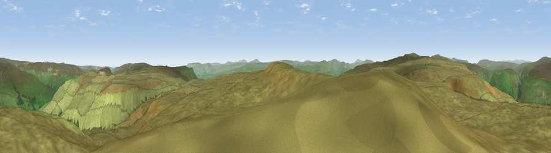

Viewpoint near Gunnerside
#8262 in England · top 18% of its area beats it · near GunnersideWhere it is
The exact computed spot (SD 92475 95075). Click the marker for map links.
The view, rendered

A 360° render of this exact spot computed from the terrain model, tree cover and land cover — summer colours, afternoon light, calibrated against photographs of famous viewpoints. Real trees, hedges and buildings will differ in detail.
The panorama
Grey silhouette: terrain skyline in each direction (720 bearings, Earth curvature and refraction included). Dashed green: skyline with trees (+15 m) and buildings (+8 m) as obstacles. Blue strip: how far the ground is visible on each bearing.
Where the view opens
Wedge length = distance to the farthest visible ground on that bearing (vegetation-aware). Rings at 10, 25 and 50 km.
What fills the view
99% grassland ·
Angular shares of the visible panorama (visual magnitude), not map area. Landscape diversity 0.02 (0–1 Shannon).
Key numbers
More beautiful places nearby
The staircase of upgrades: each row has a higher view potential than everything closer. Driving times are estimates from straight-line distance, calibrated against real road routing — check an actual route before setting out.
| Place | Direction | Drive | Score |
|---|---|---|---|
| Viewpoint near Cotterdale | W · 4 km | ~9 min | 66.9 |
| Viewpoint near Cotterdale | W · 5 km | ~10 min | 74.4 |
| Viewpoint c10024_7603 | WNW · 14 km | ~25 min | 76.9 |
| Viewpoint near Buckden | SSE · 17 km | ~29 min | 77.3 |
| Whernside | SW · 23 km | ~38 min | 79.9 |
| Warton Crag | WSW · 49 km | ~69 min | 83.2 |
| Viewpoint near Watermillock | WNW · 53 km | ~75 min | 83.5 |
| Beacon Hill | E · 54 km | ~75 min | 84.7 |
54.35116, -2.11728 · source: screening · position refined by local search. Computed location — check access rights before visiting.